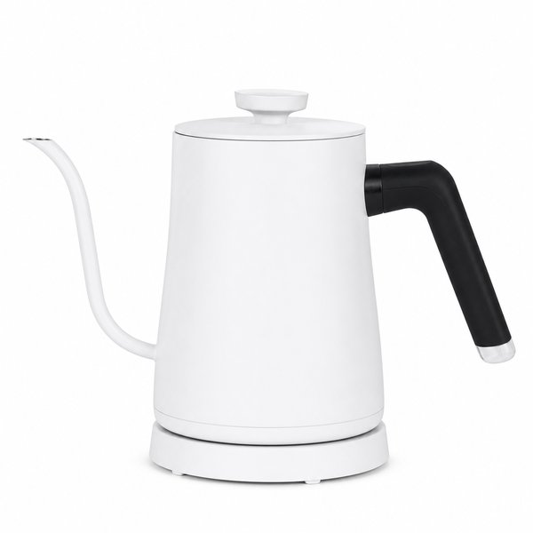
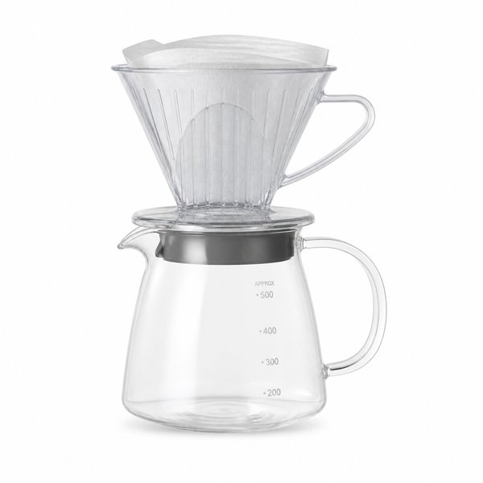
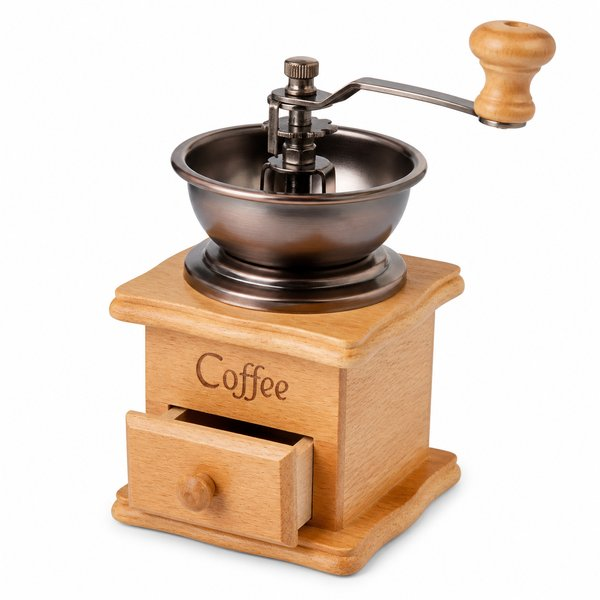
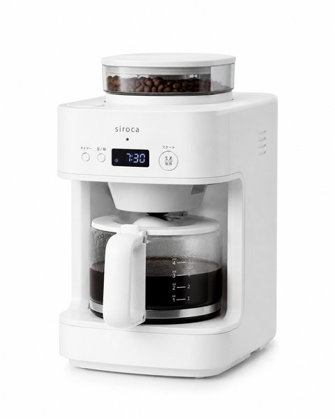
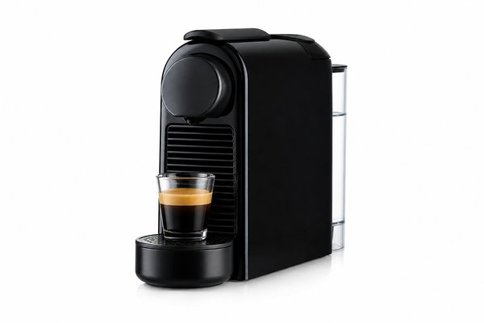
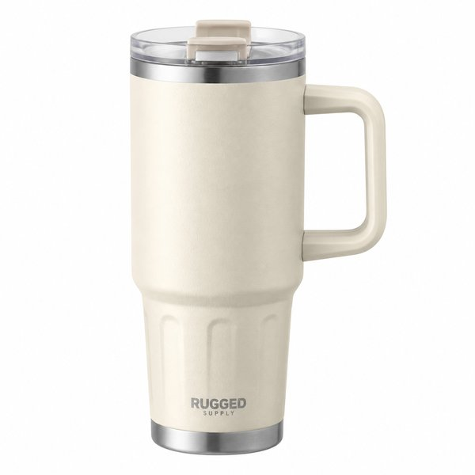
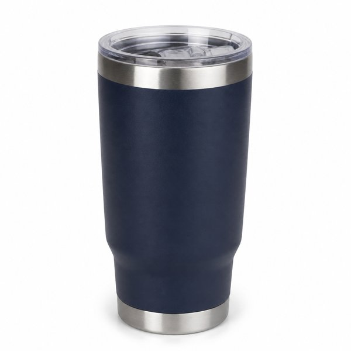
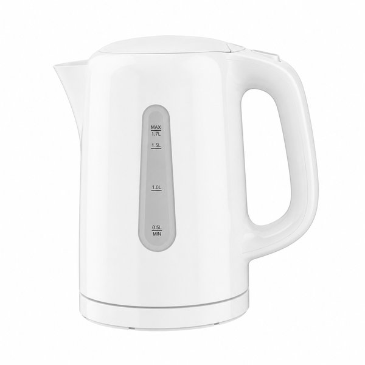
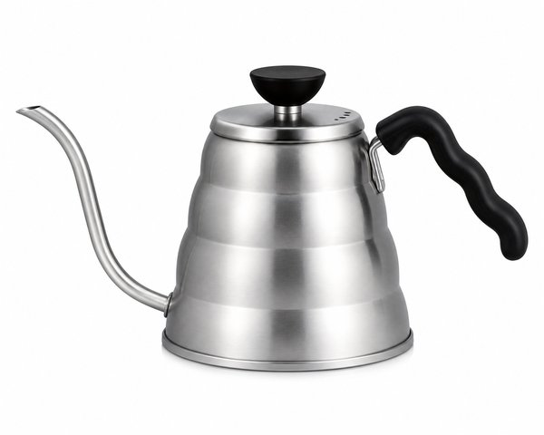

【2026年最新】おうちカフェが劇的に充実する！厳選コーヒーメーカー＆電気ケトル・タンブラー10選
外で飲む一杯は500円。それが毎日なら、ひと月で1万円を軽く超えます。同じ金額を道具に回せば、その先ずっと家で飲めるわけで、おうちカフェは「贅沢」というより「投資」に近い趣味です。
とはいえ、いきなり高級なエスプレッソマシンを買う必要はありません。豆を挽くのか、粉から始めるのか、ミルクを泡立てたいのか。自分の飲み方に合った1台を選べば、道具は3つもあれば十分に充実します。
本記事では、朝の数分を確実に良くしてくれるコーヒーメーカー・電気ケトル・タンブラーの名品10選を、写真付きで紹介します。
- おすすめ10選 スペック・特徴比較表
- BEST 1｜全自動コーヒーメーカー マグニフィカS ECAM22112
- BEST 2｜ザ・ポット 電気ケトル K07A 0.6L
- BEST 3｜V60 ドリッパー セット 01 透過樹脂製 100枚フィルター付き
- BEST 4｜セラミックコーヒーミル 手挽き CMHN-2
- BEST 5｜コーヒーメーカー EC-TA60 ミル付き 600ml
- BEST 6｜バリスタ 50 コーヒーマシン ブラック
- BEST 7｜真空タンブラー 0.47L ステンレス
- BEST 8｜真空断熱タンブラー JDE-420 420ml
- BEST 9｜アプレシア 電気ケトル 0.8L ホワイト
- BEST 10｜細口ケトル 700ml ステンレス ウェーブ用
- 【読者限定】無料体験キャンペーン
- まとめ：生活をラクにする最初の一歩
| 順位 | 商品名 | ブランド | 最大の特徴・おすすめ理由 | 総合評価 |
|---|---|---|---|---|
| BEST 1 | 全自動コーヒーメーカー マグニフィカS ECAM22112 | De'Longhi（デロンギ） | 豆から挽きたてのエスプレッソをボタン1つで抽出できる | 4.8 ★ |
| BEST 2 | ザ・ポット 電気ケトル K07A 0.6L | バルミューダ（BALMUDA） | 細口の注ぎ口で、ドリップ時に湯量をコントロールしやすい | 4.8 ★ |
| BEST 3 | V60 ドリッパー セット 01 透過樹脂製 100枚フィルター付き | HARIO（ハリオ） | 1,000円台から始められる、ハンドドリップ入門の定番 | 4.8 ★ |
| BEST 4 | セラミックコーヒーミル 手挽き CMHN-2 | HARIO（ハリオ） | 挽きたての香りを楽しみながら、自分のペースで淹れられる | 4.7 ★ |
| BEST 5 | コーヒーメーカー EC-TA60 ミル付き 600ml | 象印マホービン（ZOJIRUSHI） | ミル付きで、豆から挽きたてのコーヒーを全自動で淹れられる | 4.6 ★ |
| BEST 6 | バリスタ 50 コーヒーマシン ブラック | ネスレ（NESCAFE） | カプセルを入れてボタンを押すだけの手軽さ | 4.6 ★ |
| BEST 7 | 真空タンブラー 0.47L ステンレス | STANLEY（スタンレー） | 真空断熱で、コーヒーが数時間温かいまま保てる | 4.9 ★ |
| BEST 8 | 真空断熱タンブラー JDE-420 420ml | サーモス（THERMOS） | 結露しないので、デスクや書類のそばでも安心して置ける | 4.8 ★ |
| BEST 9 | アプレシア 電気ケトル 0.8L ホワイト | ティファール（T-fal） | 沸騰が速く、忙しい朝でも待たされない | 4.7 ★ |
| BEST 10 | 細口ケトル 700ml ステンレス ウェーブ用 | カリタ（Kalita） | 細口で湯の流れが安定し、ドリップの再現性が上がる | 4.7 ★ |
全自動コーヒーメーカー マグニフィカS ECAM22112

豆を入れてボタンを押すだけで、挽きたてのエスプレッソがカップに注がれる全自動機です。ミルクフォーマーでカプチーノも作れ、朝の忙しい時間でも3分ほどで一杯が完成します。この一台で「家のコーヒーが喫茶店の味になる」体験がはっきり分かる、おうちカフェの本命です。
- 豆から挽きたてのエスプレッソをボタン1つで抽出できる
- ミルクフォーマー付きでカプチーノやラテも自宅で作れる
- 毎日の掃除が少なく、忙しい朝でも続けられる手軽さ
- 本体が大きく設置スペースを選ぶ
- 定期的な脱スケール洗浄の手間がある
ザ・ポット 電気ケトル K07A 0.6L

注ぎ口が細く、狙ったところに静かに湯を落とせる電気ケトルです。沸騰までが速く、湯温を60〜100℃の範囲で細かく設定できるので、緑茶やハンドドリップにも向きます。見た目が美しく、出しっぱなしにしても絵になるのが長く使える理由です。
- 細口の注ぎ口で、ドリップ時に湯量をコントロールしやすい
- 60〜100℃まで温度設定でき、緑茶やコーヒーを使い分けられる
- 沸騰が速く、デザインも美しく出しっぱなしにできる
- 容量0.6Lと少なめで、来客時は何度も沸かす必要がある
V60 ドリッパー セット 01 透過樹脂製 100枚フィルター付き

ハンドドリップの世界標準ともいえるV60の入門セットです。円錐形のドリッパーと専用フィルター、サーバーがそろい、1,000円台から始められます。お湯を注ぐ速さで味が変わるので、最初の数回で「自分好みの味」を探す楽しさがあります。
- 1,000円台から始められる、ハンドドリップ入門の定番
- 円錐形の溝で湯が均一に回り、雑味が出にくい
- フィルターが手に入りやすく、継続しやすい
- 専用の細口ケトルがないと味が安定しにくい
セラミックコーヒーミル 手挽き CMHN-2

セラミック刃を採用した、静かな手回しミルです。挽く速さは電気に劣りますが、豆を挽く香りが部屋に広がる数分こそがおうちカフェの時間でもあります。粗さを細かく調整できるので、ドリップにもエスプレッソにも対応できます。
- 挽きたての香りを楽しみながら、自分のペースで淹れられる
- セラミック刃で金属臭が移らず、味がすっきりする
- 挽き目の調整幅が広く、ドリップもエスプレッソも対応
- 1杯分を挽くのに数分かかり、忙しい朝には不向き
コーヒーメーカー EC-TA60 ミル付き 600ml

豆を入れておけば、挽くところから抽出までを自動でこなすミル付きコーヒーメーカーです。600mlで2〜3杯分がちょうどよく、共働きの朝でも「スイッチを押して着替えるだけ」で完成します。ミルは水洗いできるので、豆の油で詰まる心配がありません。
- ミル付きで、豆から挽きたてのコーヒーを全自動で淹れられる
- 600mlと2〜3杯にちょうどいい容量で、少量でも味が安定
- ミルが水洗いでき、手入れが簡単
- 一度に淹れられる量が少なく、来客時には不向き
バリスタ 50 コーヒーマシン ブラック

専用カプセルをセットしてボタンを押すだけ、という手軽さが際立つコーヒーマシンです。豆を挽く手間も、フィルターを洗う手間もなく、1杯30秒ほど。ラテやカプチーノもボタン1つで作れるので、「面倒なことは全部機械に任せたい」日にちょうどいい1台です。
- カプセルを入れてボタンを押すだけの手軽さ
- ラテ・カプチーノもボタン1つで作れる
- 洗う部品が少なく、後片付けが数十秒で終わる
- 専用カプセルの購入が続くため、豆から淹れるより割高
真空タンブラー 0.47L ステンレス

アウトドアの定番ブランドが作る真空断熱タンブラーです。入れたコーヒーが数時間は温かいまま、氷を入れれば一日氷が残ります。フタ付きで持ち歩きやすく、デスクに置いても倒れにくい安定感。家でも外でも同じカップを使えるのが、想像以上に快適です。
- 真空断熱で、コーヒーが数時間温かいまま保てる
- フタ付きで持ち歩きやすく、デスクでも倒れにくい
- アウトドア定番ブランドの頑丈さで、長く使える
- 食洗機対応モデルでも、フタのパッキンは手洗いが基本
真空断熱タンブラー JDE-420 420ml

軽さと保温力のバランスがいい、日常使いの真空断熱タンブラーです。420mlはコーヒー1杯にちょうどよく、結露しないので書類の上に置いても安心。口当たりのいい飲み口で、フタを外せば食洗機にも対応するなど、毎日使う道具としての作りが丁寧です。
- 結露しないので、デスクや書類のそばでも安心して置ける
- 保温・保冷力が高く、朝のコーヒーが昼まで温かい
- 軽くて扱いやすく、食洗機対応で手入れが簡単
- フタ付きでも完全密閉ではないため、かばんに入れる際は注意
アプレシア 電気ケトル 0.8L ホワイト

1分ほどで沸く速さと、軽くて注ぎやすい形状で長年支持されている電気ケトルです。0.8Lは2人分のカップにちょうどよく、コードレスで給湯できるので、コーヒーにもカップ麺にも使えます。壊れにくく、値段も手頃で「とりあえず1本」に最適です。
- 沸騰が速く、忙しい朝でも待たされない
- 0.8Lで2人分にちょうどよく、コードレスで注げる
- 価格が手頃で、壊れにくく長く使える
- 温度設定はできず、沸騰のみのシンプル設計
細口ケトル 700ml ステンレス ウェーブ用

ハンドドリップ用に作られた、細口のステンレスケトルです。コンロで直接沸かすタイプで、注ぎ口が細いぶん湯の流れが安定し、ドリッパーの中心にゆっくり落とせます。電気ケトルと違って電源コードがなく、キッチンでもテーブルでも場所を選ばず使えます。
- 細口で湯の流れが安定し、ドリップの再現性が上がる
- コンロで直接沸かせるので、電源の場所を選ばない
- ステンレス製で頑丈、 IH・ガス火の両方に対応
- 温度計が付いていないため、湯温は感覚に頼る
日々の暮らしや買い物を楽しむなら、人気雑誌1,000誌以上がスマホやタブレットで読み放題の「楽天マガジン」が圧倒的におすすめです！初回31日間は完全無料で、無料期間中に解約すれば料金は1円もかかりません。
＼ 読者負担0円！雑誌1,000誌読み放題 ／楽天マガジン 31日間無料お試しを詳しく見る →
💡 まとめ：生活をラクにする最初の一歩
おうちカフェは、道具をそろえるほど難しくなるわけではなく、むしろ「自分が毎朝どんな手間を許せるか」を決めると一気に楽しくなります。全自動に任せたいならマグニフィカ、手を動かす時間を楽しみたいならドリッパーとケトル。どちらも正解で、失敗するのは「飲み方に合わない道具」を値段だけで選んだときです。まずは電気ケトル1本から始めて、豆とドリッパーを足していくのが、いちばん後悔の少ない順番です。
楽天市場では「5と0のつく日」や「お買い物マラソン」などのキャンペーンに合わせて購入すると、ポイント還元が最大化してお得に手に入ります。ぜひチェックしてみてくださいね。